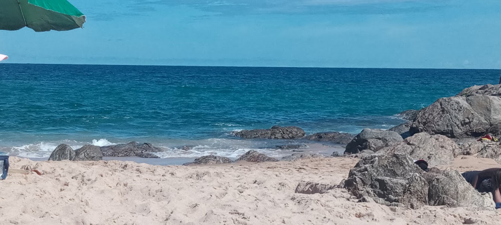
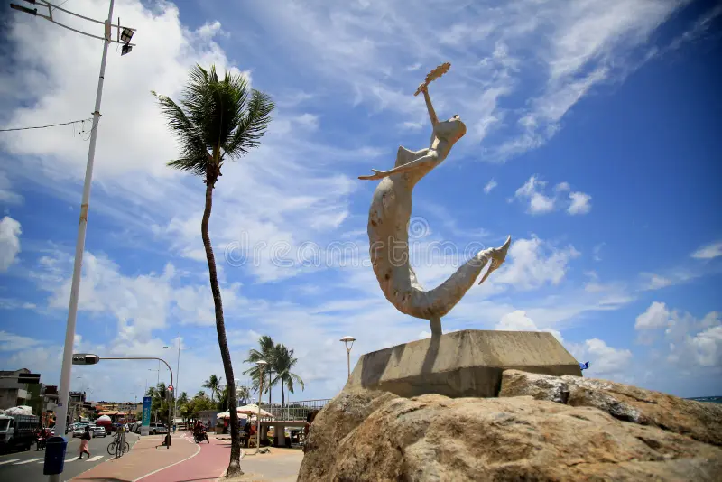
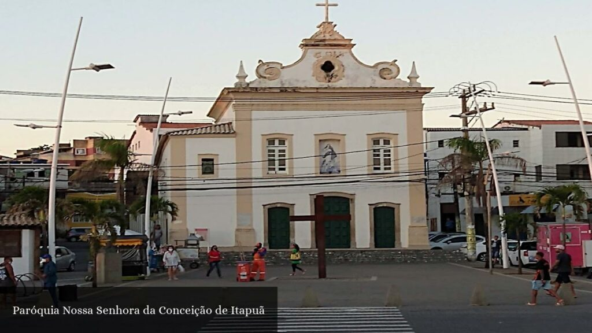
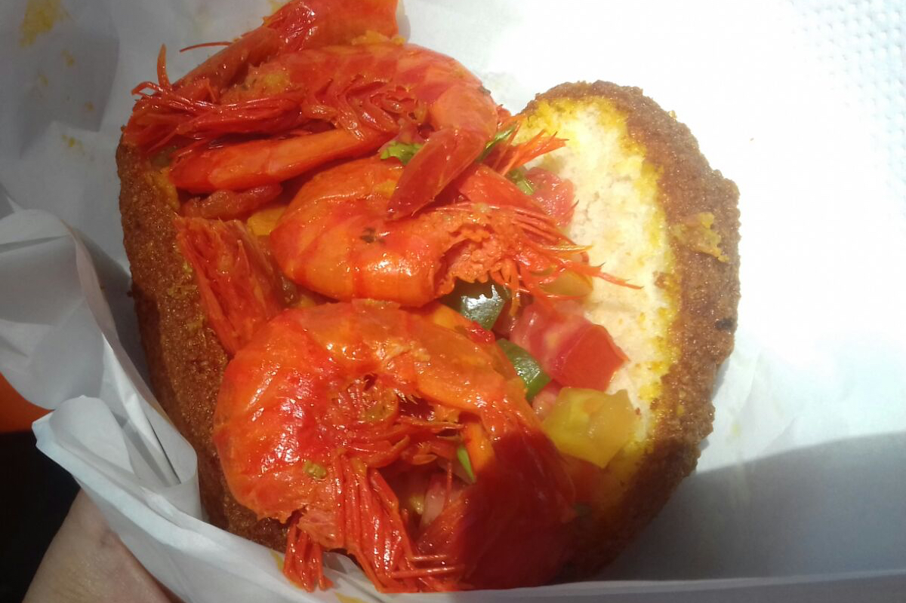
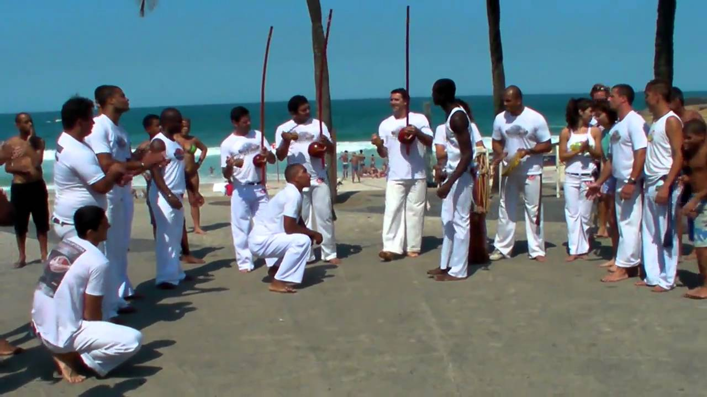
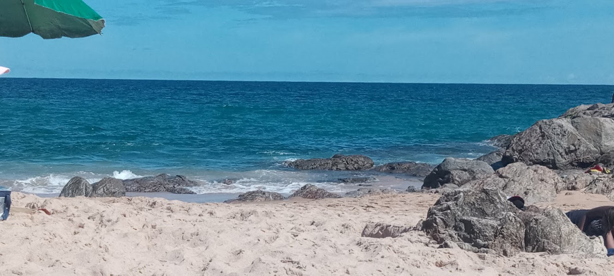
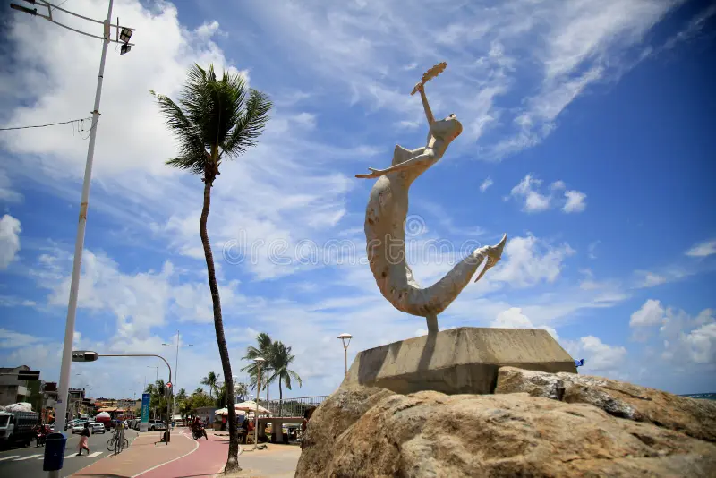
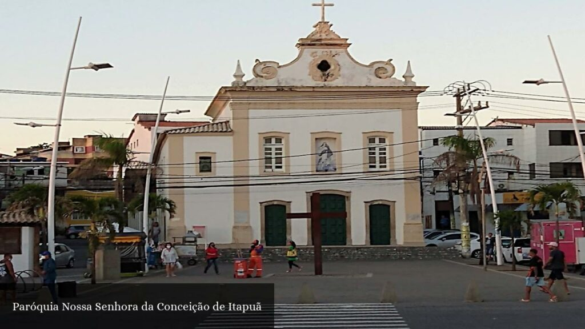
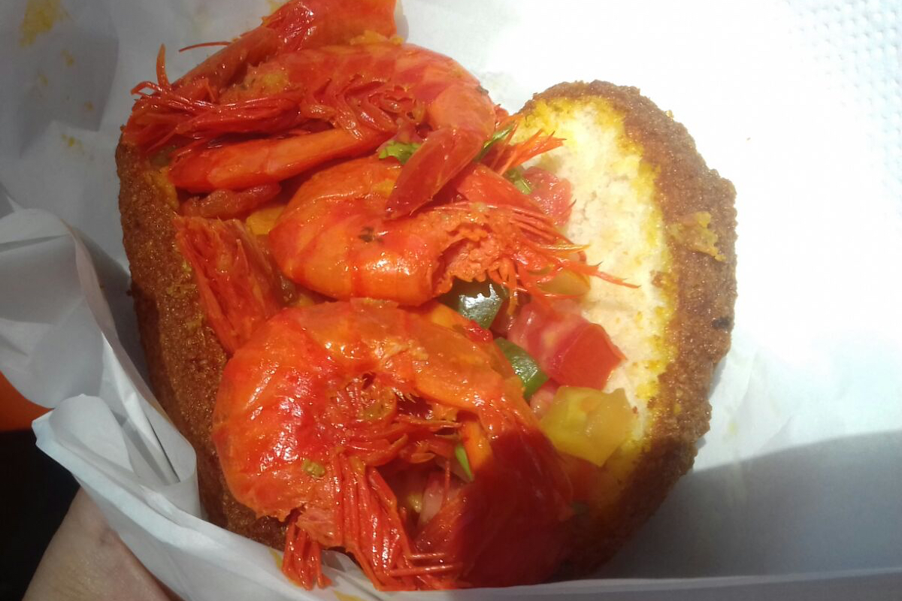
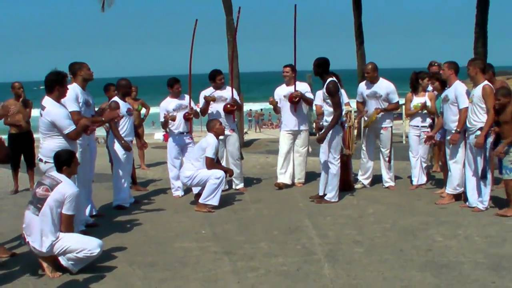

🎶 Passar uma Tarde em Itapuã
História de Itapuã
Itapuã, bairro icônico de Salvador, é famoso por suas praias, tradições culturais e pela música imortalizada por Vinicius de Moraes e Toquinho. Desde os tempos coloniais, atrai moradores, visitantes e artistas em busca de inspiração.
Lavagem de Itapuã
A Lavagem de Itapuã é uma das festas mais tradicionais da Bahia. Todos os anos, baianas vestidas de branco percorrem as ruas em procissão, celebrando fé, cultura e resistência.
Moradores e Visitantes Famosos
Vinicius de Moraes morou em Itapuã, e Toquinho ajudou a eternizar o bairro em música. Além deles, Dorival Caymmi e Jorge Amado também frequentaram o local, reforçando sua ligação com a arte e cultura baiana.
O Famoso Acarajé da Cira
Um dos maiores símbolos do bairro é o acarajé da Cira, conhecido em todo o Brasil. O quitute típico baiano tornou-se ponto turístico obrigatório e parte da identidade cultural de Itapuã.
Curiosidades
Itapuã tem histórias de famílias antigas como a Família dos Trindades, Aládios, Garbogines, Mazzafera e os Loyas.
Resa a lenda que a casa Nº 11 era a mais animada da Antiga Ladeira do Abaeté na festa de São João.
Galeria de Fotos

 








